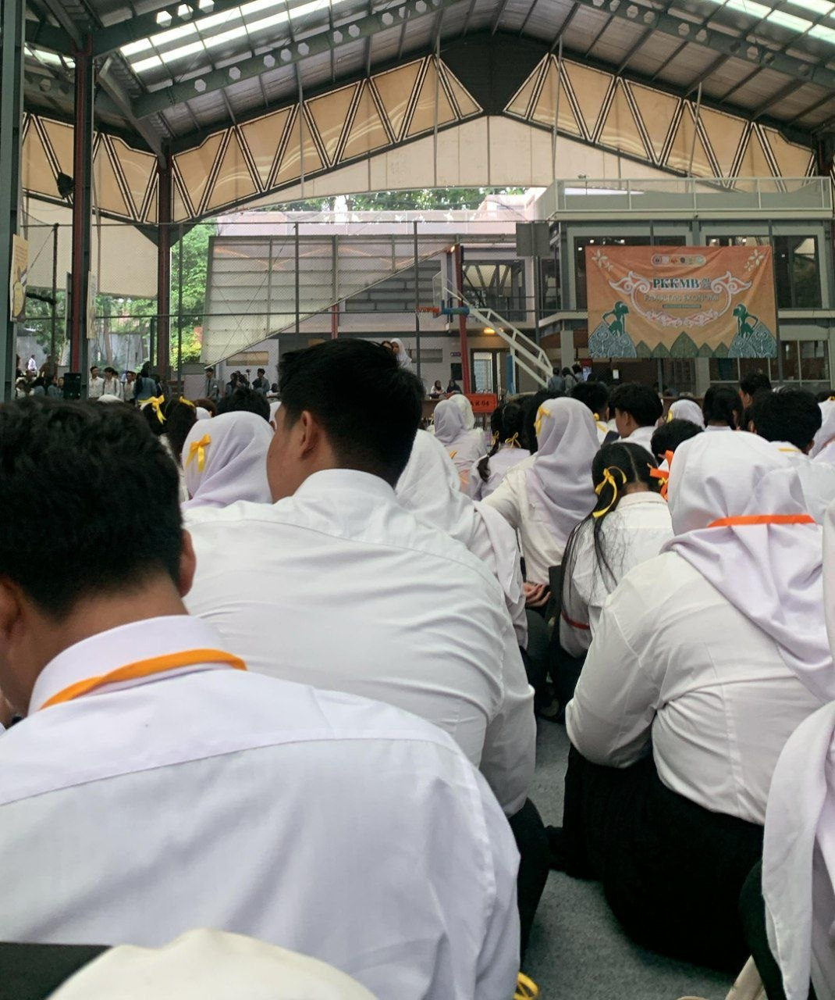
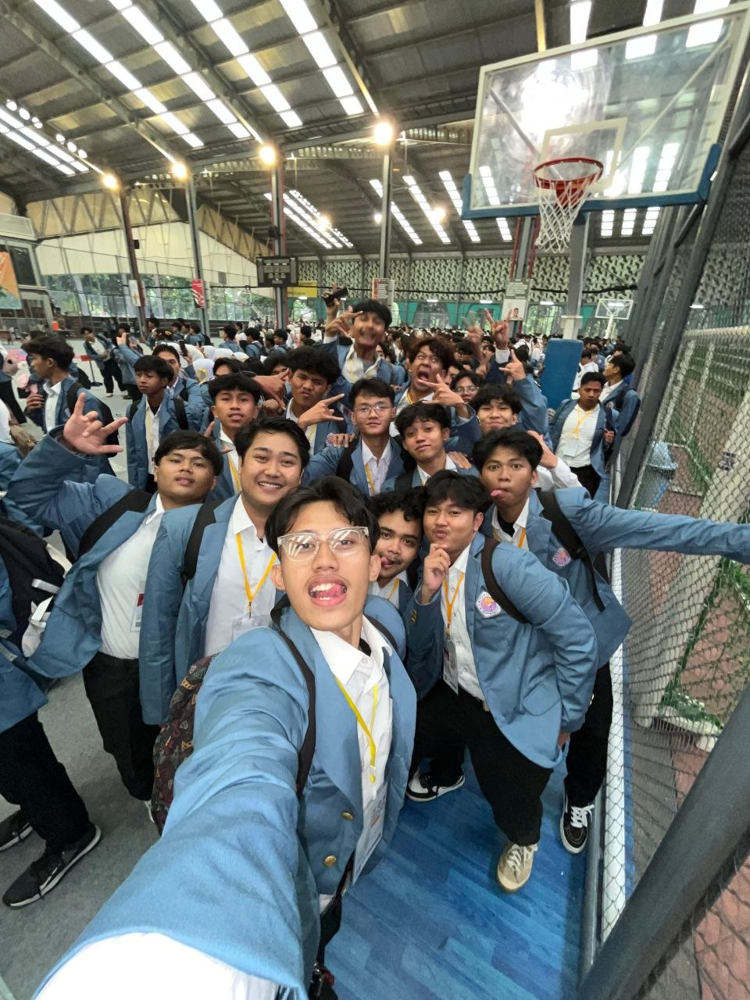
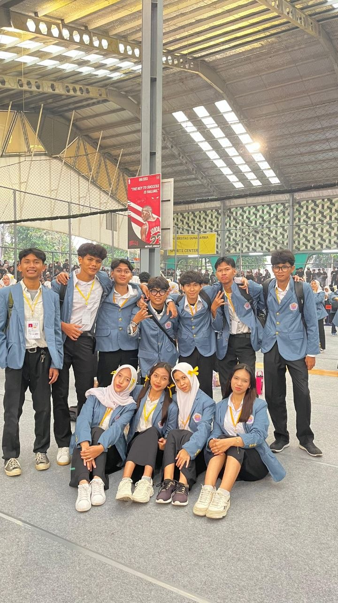

Hari pertama kuliah rasanya campur aduk banget! Deg-degan, excited, tapi juga sedikit cemas. Begitu melangkah melewati gerbang kampus, rasanya dunia baru terbuka di depan mata. Gedung-gedung megah, mahasiswa-mahasiswi yang lalu lalang dengan gaya masing-masing, dan suasana yang terasa lebih dewasa dibanding SMA. Hari pertama diisi dengan acara orientasi. Kami dikumpulkan di aula besar, dikenalkan dengan dosen-dosen, kakak tingkat, dan berbagai organisasi kemahasiswaan. Rasanya seperti kembali jadi anak baru lagi, harus berkenalan dengan banyak orang baru. Tapi, di balik rasa canggung itu, ada rasa penasaran yang besar untuk menjelajahi semua hal baru yang ada di depan. Begitu masuk kelas pertama, suasana langsung terasa berbeda. Dosen menjelaskan materi dengan cara yang lebih mendalam, diskusi kelas pun lebih aktif. Aku merasa tertantang untuk bisa mengikuti ritme perkuliahan yang lebih cepat dan kompleks. Rasanya harus lebih giat belajar dan nggak bisa santai lagi seperti dulu. Di luar jam kuliah, ada banyak kegiatan mahasiswa yang menarik. Mulai dari klub hobi, kepanitiaan acara, sampai kegiatan sosial. Aku jadi punya banyak kesempatan untuk bertemu orang-orang baru dengan minat yang sama, belajar berorganisasi, dan mengembangkan diri di luar akademik. Tentu saja, masuk kuliah juga membawa tantangan baru. Harus bisa mengatur waktu antara kuliah, organisasi, dan kehidupan pribadi. Jauh dari rumah juga jadi penyesuaian tersendiri. Tapi, semua tantangan itu rasanya sepadan dengan kesempatan belajar dan berkembang yang ditawarkan oleh dunia perkuliahan. Aku berharap bisa menjalani masa kuliah ini dengan baik, menimba ilmu sebanyak-banyaknya, dan menjadi pribadi yang lebih baik lagi.

